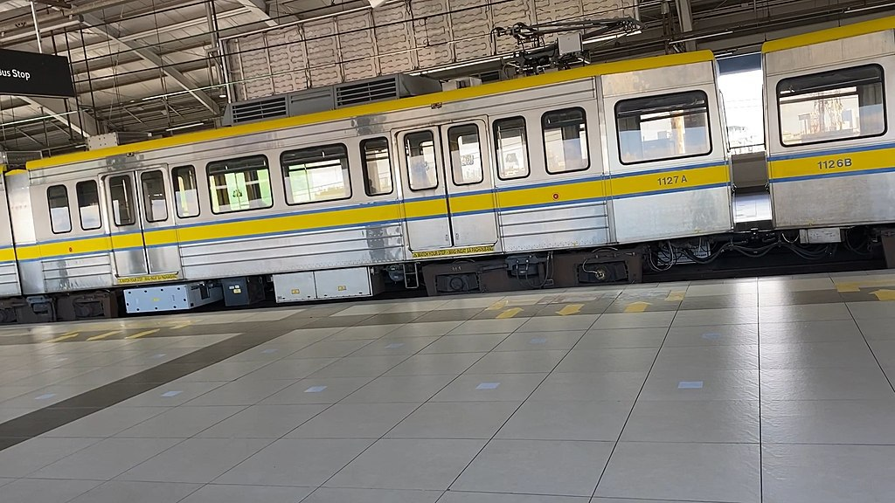
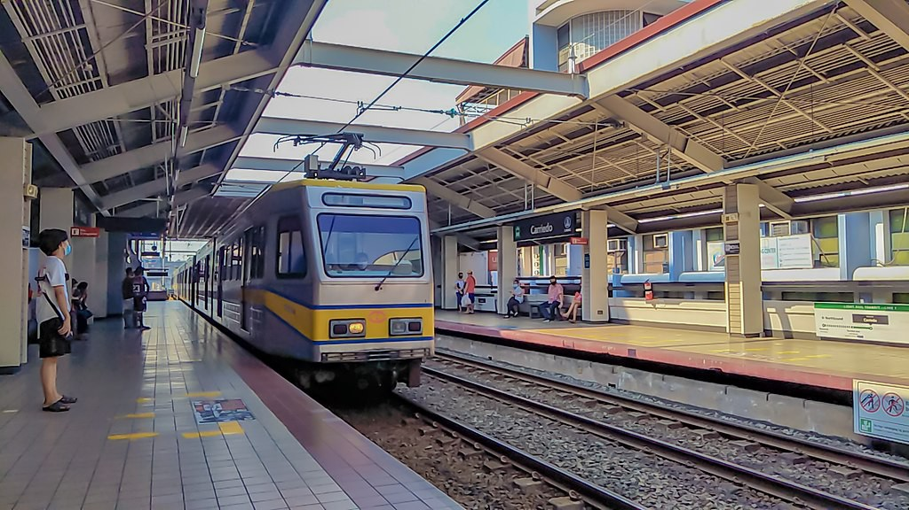

LRTA 1100 class
The LRTA 1100 class is the second-generation class of high-floor light rail vehicles of the LRT Line 1.
The trains were purchased in 1996 as part of a capacity expansion project funded by official development assistance (ODA) loans from Japan. Entering service in 1999,[6][13] many vehicles were taken out of service due to lack of spare parts. The trains subsequently underwent re-engineering and refurbishment by Voith from 2019 to 2020.
| LRTA 1100 class | |
|---|---|

A 1100 class train at Monumento in December 2021
Interior of the train captured in April 2024
|
|
| Stock type | Light rail vehicle |
| In service | 1999–present |
| Manufacturer |
Hyundai Precision[note 1]
ADtranz[note 2] |
| Assembled at | Changwon, South Korea |
| Constructed | 1997–1998 |
| Entered service | 1999 |
| Refurbished | 2019–2020 |
| Number built | 28 vehicles (7 sets) |
| Number in service | 20 vehicles (5 sets) |
| Formation | 4 cars per trainset (Mc–M–M–Mc)[note 3] |
| Fleet numbers | 1101–1128 |
| Capacity | 1,358 passengers |
| Operator(s) |
|
| Depot(s) | Baclaran |
| Line(s) served | LRT Line 1 |
| Specifications | |
| Car body construction | Stainless steel |
| Train length | 105.7 m[note 4] |
| Car length |
Driving head cars: 26.35 m
Intermediate cars: 26.5 m |
| Width | 2.59 m |
| Height |
From top of rail: 3.74 m
Pantograph locked down: 3.95 m |
| Floor height | 920 mm |
| Platform height | 690 mm |
| Entry | Step |
| Doors | 4 sets of 1.5 m × 1.9 m double-leaf pocket doors per side |
| Articulated sections | 2 per PRV |
| Wheel diameter |
New: 660 mm
Worn: 600 mm |
| Wheelbase |
Per bogie: 2.31 m
Bogie centers: 10 m Total: 20 m |
| Maximum speed | 60 km/h |
| Weight |
Head car: 37.4 t
Intermediate car: 36.5 t |
| Axie load | 10.7 t |
| Steep gradient | 4% |
| Traction system |
Adtranz[note 5]
Voith[note 6] IGBT–VVVF |
| Traction motors |
4 × 3-phase AC induction motor
As built: 125 kW Refurbished: 170 kW |
| Power output |
As built:
Refurbished:
|
| Acceleration | 1.1 m/s² |
| Deceleration | Service: 1.3 m/s² Emergency: 2.08 m/s² |
| Auxiliaries | 2 × Static inverter |
| HVAC | Roof-mounted duct-type air conditioning (2 units per LRV) |
| Electric system(s) | 750 V DC overhead catenary |
| Current collector(s) | Single-arm pantograph |
| UIC classification | Bo′+2′+Bo′ |
| Wheels driven | 8 out of 12 per LRV |
| Bogies | FLEXX Metro 1000 outside-frame type |
| Minimum turning radius | 25 m |
| Breaking system(s) | Knorr-Bremse regenerative and electro-pneumatic |
| Safety system(s) |
ATS (1999–2007)
ATP (2007–present) |
| Coupling system | Semi-permanent |
| Multiple working | Within type |
| Seating | Longitudinal |
| Track gauge |
1,435 mm
Standard track gauge |
The trains were purchased in 1996 as part of a capacity expansion project funded by official development assistance (ODA) loans from Japan. Entering service in 1999,[6][13] many vehicles were taken out of service due to lack of spare parts. The trains subsequently underwent re-engineering and refurbishment by Voith from 2019 to 2020.
Background and purchase
By 1990, the LRT Line 1 in Metro Manila reached its capacity, necessitating the need for capacity expansion. The project, launched in 1994 and undertaken at a cost of ₱4.1 billion, was one of the flagship projects of the administration of President Fidel V. Ramos. Initially, 32 cars with identical specifications to the 1000 class trains were planned to be ordered for the 32 two-car trains operating at the time so that each train would consist of three cars. However, with the increasing transport demand, four-car trains were considered instead.In August 1996, a consortium of Marubeni Corporation, Adtranz, and ABB was awarded the contract and was signed the following September. On October 18, Hyundai Precision signed a contract to produce 28 cars (7 sets) for the LRT Line 1. These cars were produced between 1997 and 1998 as its first manufactured light rail vehicle.
Commissioning and later decline
The handover ceremony and test-run of the 1100 series LRV was done with former President Joseph Estrada and former Vice-President Gloria Macapagal Arroyo in 1999. These trains raised the line's capacity by half from a carrying capacity of 18,000 passengers per hour per direction to 27,000 passengers per hour per direction.After 2001, many vehicles left the service owing to problems in operations and maintenance. Although spare parts had been substantially given in 2004, 14 cars remained out-of-service due to the lack thereof as of 2013, including two cars involved in a collision. Most of the spare parts for the trains, including brake parts, were only procurable from Adtranz. There were attempts to procure spare parts, but these attempts failed. This was affected by the acquisition of Adtranz by Bombardier Transportation in 2001 (later acquired by Alstom in 2021). Furthermore, parts in the 1200 class and the 1100 class only share 20% commonality.
In addition, these trainsets were, until 2020, used as "skip trains" or trains meant to target a particular station due to extremely high volume of passengers, especially during rush hours.
1A 1100 class trainset was used for the first test run of the LRT Line 1 Cavite Extension Phase 1 on December 19, 2023. According to the Light Rail Manila Corporation (LRMC), the 1100 class is the widest in terms of car body, making it the most strategic option to check for initial compatibility of station platforms, walkways, cableways, and others.
Refurbishment
Refurbishment of the second-generation trains was initiated by LRMC in February 2018, which aimed to restore the inactive fleet into serviceable conditions and increase the capacity of Line 1. LRMC and Voith signed an agreement to refurbish the said fleet which includes the control devices, traction systems, and automatic diagnostic displays of main circuits. The refurbishment was carried out between 2019 and 2020 and six out of seven sets returned to operation with an extended vehicle life. The remaining unrepaired set is in the Santolan Depot of LRT-2, due to the ongoing expansion of the Line 1 depot.The 1100 class are the first 6-axle (3-bogie) light rail vehicles with two articulated cars in the entire rolling stock of the LRT Line 1, as its predecessor, the 1000 class, was built to the 8-axle (4-bogie) design with three sections.
Car body

The 1100 class trains resemble those of Adana Metro (top) and the LRV34 trains of Istanbul Tram Line T4 (above). Both trains were manufactured by Hyundai Precision's successor, Hyundai Rotem.
The train car body is made of stainless steel, sporting a silver body with yellow and blue cheatlines. Each LRV has four sliding pocket-type doors per side. The 1100 class trains are 90 millimeters wider than the 1000 class.
Similar to the 1000 class, the 1100 class have cheatlines of blue and yellow that run through its sides. The trains also served as a prototype for future LRVs made by Hyundai Precision, which bears resemblance to the trains used in the Adana Metro and the Hyundai Rotem LRV34 trains of the Line T4 of the Istanbul Tram. Each light rail vehicle has two roof-mounted air-conditioning units. In total, there are eight air-conditioning units in a four-car train set.

1100 class train at Gil Puyat station in November 2006
1100 class train at United Nations station in June 2020
Interior
The trains have longitudinal seating. A wheelchair provision is present near the articulated portion of the intermediate cars.
Image shows stanchions, ACU vents, and briefly, the builders' plate.

1100 class train with seats removed, showing wheelchair space.
View of driving cab before the 2019-2020 refurbishment.
Electrical
The 1100 class trains are the first Line 1 trains to have a propulsion system controlled by variable-voltage/variable frequency drive (VVVF) inverters with insulated-gate bipolar transistors (IGBT). The two inverters drive the four 3-phase alternating current, enclosed-type induction motors. Adtranz supplied the original electrical components, while Voith installed the new components. The traction equipment in a refurbished train consists of two Voith EmCon I1000-9AU traction inverters with 350 kilovolt-amperes continuous power in each, two auxiliary static inverters, and a VPort IO control unit.Prior to refurbishment, the trains produced a distinct high-pitched acceleration sound unique to the Adtranz VVVF controller used, a trait present in the train's derivative models. After refurbishment, the traction acceleration sound is now identical to the one used in the MRTC 3100 class trains, as its traction controller is manufactured by Voith as well.
Mechanical
Each LRV has three outside-frame bogies consisting of two motorized bogies at the ends of the LRV and one trailer bogie under the articulation. Unlike other trains, which have a bogie wheelbase of 1.9 meters, the long, 2.31-meter wheelbases of the 1100 class trains has caused restricted access to some tracks at the Baclaran Depot. The primary suspension is a chevron rubber spring, while the secondary suspension is an air suspension, similar to the 1200 class. Semi-permanent couplers are present in the ends of each light rail vehicle except the driving cab section of the MC car.
New underfloor traction equipment (Voith), outside-frame bogie and pantograph of a refurbished 1100 class. Semi-permanent couplers can also be seen on the right.
The configuration of a four-car trainset is Mc–M–M–Mc. Mc denotes a driving car while M denotes an intermediate car.
| Car type | Mc | M | |||
|---|---|---|---|---|---|
| A | B | A | B | ||
| Quantity | 2 | 2 | |||
| Control cab | Yes | No | No | No | |
| VVVF inverter | Yes | Yes | Yes | Yes | |
| Auxiliary inverter | Yes | Yes | Yes | Yes | |
| Pantograph | Yes | No | Yes | No | |
| Car length | 26.35 m | 26.5 m | |||
| Capacity | Seated | 78 | 82 | ||
| Standing | 252 | 267 | |||
| Total | 330 | 349 | |||
Legend
| Either out of service, scrapped, or decommissioned |
| Set no. | 1 | 2 | 3 | 4 |
|---|---|---|---|---|
| 1 | 1101 | 1102 | 1103 | 1104 |
| 2 | 1105 | 1106 | 1107 | 1108 |
| 3 | 1109 | 1110 | 1111 | 1112 |
| 4 | 1113 | 1114 | 1115 | 1116 |
| 5 | 1117 | 1118 | 1119 | 1120 |
| 6 | 1121 | 1122 | 1123 | 1124 |
| 7 | 1125 | 1126 | 1127 | 1128 |
- Two 1100 class trains, LRVs 1107 and 1120, collided at Baclaran Depot. LRV 1120, however, was subsequently repaired and refurbished in 2019.
- On November 27, 2017, a 1100 class train door malfunctioned after a passenger forcibly opened it at Vito Cruz station, causing the sensor to malfunction. The train continued its journey with the door left open, and a passenger recorded this incident on camera.
- On April 19, 2023, a 1100 class train stopped between Roosevelt and Balintawak Station.The 1100 class was coupled to a 1000 class train to be brought back to Baclaran Depot.
- On August 24, 2023, a 1100 class train derailed near Baclaran station, leaving 1104 stranded. Efforts took the entire day to remove the train, necessitating track repairs. As a result, provisional services were implemented between Fernando Poe Jr. and Gil Puyat stations, scheduled for the upcoming weekend until August 27. Fortunately, the repairs were completed ahead of schedule and certified on August 26, enabling the line to resume regular operations.

1100 class train at Carriedo station in June 2020
1100 class interior in June 2020
- ^ Carbody
- ^ Electrical components
- ^ Under normal operation. The trains can be operated with 2 cars (Mc–Mc) or 3 cars (Mc–M–Mc).
- ^ 4-car train length. The length of a three-car train is 79.35 meters, while the length of a two-car train is 52.7 meters.
- ^ As built; 1999–2020
- ^ Refurbished; 2019–present